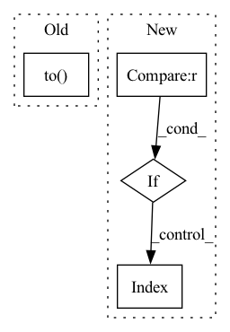

Pattern ID :30275

Before Change
return torch.cat(processed_features, dim=-1)
def process_static_cat(self, feature: torch.Tensor) -> torch.Tensor:
feature = self.embed_static(feature.to(self.dtype))
return feature.unsqueeze(1).expand(-1, self.T, -1)
def process_dynamic_cat(self, feature: torch.Tensor) -> torch.Tensor:
After Change
return torch.cat(processed_features, dim=-1)
def process_static_cat(self, feature: torch.Tensor) -> torch.Tensor:
if self.embeddings["embed_static"] is not None:
feature = self.embeddings["embed_static"](feature)
return feature.unsqueeze(1).expand(-1, self.T, -1)
def process_dynamic_cat(self, feature: torch.Tensor) -> torch.Tensor:
if self.embeddings["embed_dynamic"] is None:
In pattern: SUPERPATTERN
Frequency: 3
Non-data size: 4
Instances
Fragment ID: 89735145
Project Name: zalandoresearch/pytorch-ts
Commit Name: 1bd9480d866aff2bd82940ac299bbbbbdfac98d7
Time: 2019-11-02
Author: kashif.rasul@gmail.com
File Name: pts/modules/feature.py
M Class Name: FeatureAssembler
N Class Name: FeatureAssembler
M Method Name: process_static_cat(2)
N Method Name: process_static_cat(2)
M Parent Class: nn.Module
N Parent Class: nn.Module
M File Name: pts/modules/feature.py
N File Name: pts/modules/feature.py
M Start Line: 81
M End Line: 81
N Start Line: 72
N End Line: 74
'>
Before Change
num_float_field = float_fields.shape[-1]
// [batch_size, max_item_length, num_float_field]
index = (
torch.arange(0, num_float_field)
.unsqueeze(0)
.expand_as(float_fields)
.long()
.to(self.device)
)
// [batch_size, max_item_length, num_float_field, embed_dim]
float_embedding = self.float_embedding_table[type](index)
float_embedding = torch.mul(float_embedding, float_fields.unsqueeze(-1))
After Change
if float_fields is None:
return None
if type == "item":
embedding_shape = float_fields.shape[:-1] + (-1,)
float_fields = float_fields.reshape(-1, float_fields.shape[-2], float_fields.shape[-1])
float_embedding = self.float_embedding_table[type](float_fields)
float_embedding = float_embedding.view(embedding_shape)
else:
float_embedding = self.float_embedding_table[type](float_fields)
return float_embedding
def embed_token_fields(self, token_fields, type):
'>
Fragment ID: 89735144
Project Name: rucaibox/recbole
Commit Name: 3ea75a6e4e9102223ea8fb80f9880b2bb423fbf1
Time: 2022-07-16
Author: 1204216974@qq.com
File Name: recbole/model/layers.py
M Class Name: ContextSeqEmbAbstractLayer
N Class Name: ContextSeqEmbAbstractLayer
M Method Name: embed_float_fields(4)
N Method Name: embed_float_fields(4)
M Parent Class: nn.Module
N Parent Class: nn.Module
M File Name: recbole/model/layers.py
N File Name: recbole/model/layers.py
M Start Line: 917
M End Line: 932
N Start Line: 955
N End Line: 966
'>
Before Change
return feature.unsqueeze(1).expand(-1, self.T, -1)
def process_dynamic_cat(self, feature: torch.Tensor) -> torch.Tensor:
return self.embed_dynamic(feature.to(self.dtype))
def process_static_real(self, feature: torch.Tensor) -> torch.Tensor:
return feature.unsqueeze(1).expand(-1, self.T, -1)
After Change
return feature.unsqueeze(1).expand(-1, self.T, -1)
def process_dynamic_cat(self, feature: torch.Tensor) -> torch.Tensor:
if self.embeddings["embed_dynamic"] is None:
return feature
else:
return self.embeddings["embed_dynamic"](feature)
def process_static_real(self, feature: torch.Tensor) -> torch.Tensor:
return feature.unsqueeze(1).expand(-1, self.T, -1)
'>
Fragment ID: 89735146
Project Name: zalandoresearch/pytorch-ts
Commit Name: 1bd9480d866aff2bd82940ac299bbbbbdfac98d7
Time: 2019-11-02
Author: kashif.rasul@gmail.com
File Name: pts/modules/feature.py
M Class Name: FeatureAssembler
N Class Name: FeatureAssembler
M Method Name: process_dynamic_cat(2)
N Method Name: process_dynamic_cat(2)
M Parent Class: nn.Module
N Parent Class: nn.Module
M File Name: pts/modules/feature.py
N File Name: pts/modules/feature.py
M Start Line: 85
M End Line: 85
N Start Line: 77
N End Line: 82